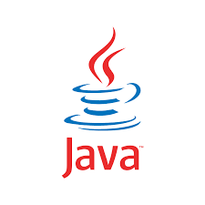
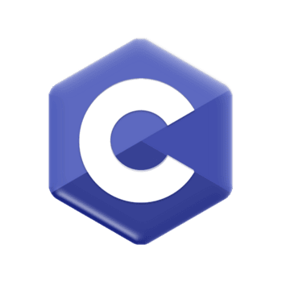
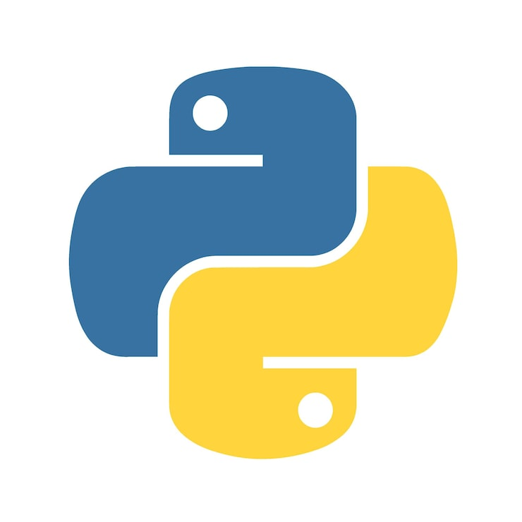
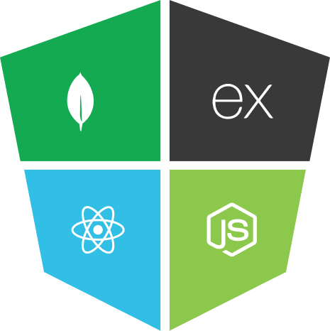

Java Programming
Java is a widely used, high-level, object-oriented programming language owned by Oracle that runs on over 3 billion devices. Known for its principle of "Write Once, Run Anywhere" (WORA), Java code is compiled into an intermediate bytecode that can run on any system with a Java Virtual Machine (JVM).

C Programming
C is a powerful, general-purpose procedural programming language created by Dennis Ritchie at Bell Labs in 1972. It is often called the "mother of all languages" because its syntax and concepts inspired many modern languages like Java, Python, and C++.

C++ Programming
C++ is a powerful, general-purpose, object-oriented programming language known for its high performance and efficiency in managing system resources. Developed by Bjarne Stroustrup in 1979 as an extension of the C language, it is widely used in applications where speed and direct hardware interaction are critical.

Pyhton Pragramming
Python is a popular, high-level, general-purpose programming language known for its simple, readable syntax that emphasizes code clarity and developer productivity. It supports multiple programming paradigms, including procedural, object-oriented, and functional programming.

HTML
HTML (HyperText Markup Language) is the standard markup language used to create and structure web pages. It acts as the "skeleton" of a website, defining where headings, paragraphs, images, and links are placed so a web browser can display them correctly.

CSS
CSS (Cascading Style Sheets) is the standard stylesheet language used to describe the presentation and layout of web pages written in HTML or XML. While HTML provides the structural foundation of a website, CSS allows you to control its visual appearance, including fonts, colors, spacing, and positioning.

JavaScript
JavaScript (JS) is a high-level, interpreted programming language that serves as one of the three core technologies of the World Wide Web, alongside HTML and CSS. While originally created by Brendan Eich in 1995 to make web pages "alive" with interactive features like animations and form validation, it has since evolved into a versatile language used for full-stack development, mobile apps, and even game development.

MERN STACK
The MERN stack is a popular JavaScript-based framework for building full-stack, dynamic web applications, utilizing MongoDB (database), Express.js (backend framework), React.js (frontend library), and Node.js (runtime). It allows developers to use JavaScript for both client-side and server-side code, enhancing efficiency and enabling seamless data flow between the browser and database.